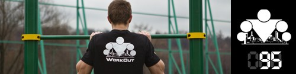

100 Дневный воркаут
<==== Вернуться к оглавлению
День 95. ТУРБО комплекс ДЕЛЬТА

Мы продолжаем двигаться в турбо-режиме! Поэтому после хорошей разминки выполняем 1 раз уже знакомое нам упражнение "Всадник" и переходим к новому комплексу, который нужно будет выполнить 5 раз (без отдыха между упражнениями, отдых между кругами по самочувствию)!
Упражнение №1. Медленные отжимания
. Выполняем в темпе 1-0-5, то есть вниз опускаемся на 5 секунд, и не задерживаясь в нижней точке выталкиваем себя вверх мощным силовым движением. Количество повторений - 5-10 раз.
Упражнение №2. Медленные приседания
. Идея такая же, как и в отжиманиях. Делается приседания медленно, примерно в темпе 1-0-5, с абсолютно правильной техникой! Количество повторений - 10-20 раз.
Упражнение №3. Медленные подтягивания
. Выполняем в темпе 1-0-5, то есть вверх поднимаемся быстро, задерживаемся 0 секунд в верхней точке и опускаемся вниз за 5 секунд. Количество повторений - 2-5 раз.
Ну а завтра будет новый день, и новый комплекс ;)
======> День 96. ТУРБО комплекс ЭПСИЛОН